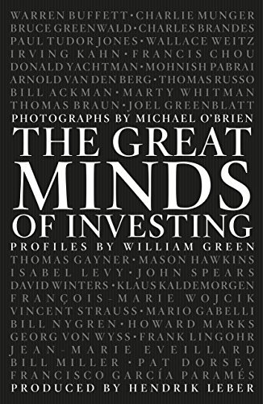

2014年2月12日，摄影师迈克尔·奥布莱恩（Michael O'Brien）在纽约为一位108岁的老人拍下肖像——本杰明·格雷厄姆的学生欧文·卡恩（Irving Kahn），当时全球在世最年长的职业投资人。卡恩在镜头前望着自己的孙子，次年他便去世，未能看到这张照片收入《The Great Minds of Investing》一书。这本书由慕尼黑出版社FinanzBuch Verlag于2015年5月29日出版，是一部大开本黑白摄影集，由德国资产管理公司ACATIS Investment创始人亨德里克·勒伯（Hendrik Leber）发起策划，收录了33位投资人的肖像与文字侧写。
执笔的威廉·格林（William Green）1968年生于伦敦，伊顿公学毕业后就读牛津大学英语文学专业，又在哥伦比亚大学拿到新闻学硕士学位，此后为《时代》《财富》《福布斯》《货币》《纽约客》《经济学人》《彭博市场》等媒体撰稿，还曾主编《时代》亚洲版（常驻香港）及欧洲—中东—非洲版。书中文字并非他一人独立完成，吉塞拉·鲍尔（Gisela Bauer）、琼·卡普兰（Joan Caplin）、彼得·卡博纳拉（Peter Carbonara）、艾米·费尔德曼（Amy Feldman）、比吉特·韦特延（Birgit Wetjen）都参与了撰写，格林领衔统筹全书。摄影师奥布莱恩1950年生于孟菲斯，田纳西大学哲学系毕业，早年在《迈阿密新闻报》做摄影记者，曾以两组关于流浪与城市贫困的专题分别在1975年、1977年获罗伯特·肯尼迪新闻奖；他1988年为巴菲特拍摄的一张肖像，后来用作罗杰·洛温斯坦（Roger Lowenstein）1995年出版的巴菲特传记封面，2009至2011年间史密森学会国家肖像馆收藏了他的18幅肖像作品。为拍摄这本书，他花了五年多时间辗转各地为33位投资人拍照。
33人名单里有巴菲特、查理·芒格，也有乔尔·格林布拉特（Joel Greenblatt）、霍华德·马克斯（Howard Marks）、比尔·阿克曼（Bill Ackman）、马里奥·加贝利（Mario Gabelli）、梅森·霍金斯（Mason Hawkins）、让-玛丽·埃威拉德（Jean-Marie Eveillard）、弗朗西斯·周（Francis Chou）、比尔·米勒（Bill Miller）、莫尼什·帕伯莱（Mohnish Pabrai）、汤姆·盖纳（Tom Gayner）等较少出现在大众媒体镜头前的人物。每幅肖像旁的短文不复述完整履历，而是提取一个能解释方法的判断。马克斯把"先考虑下行风险"称为投资者最重要的动作；格林布拉特解释，偏僻或结构特殊、没人盯着的地方更容易出现便宜货；卡恩则由孙子安德鲁陪在身边，回忆1929年崩盘时买过的股票。把这些回答并排放置，读者能直接比较风险控制、逆向选择和耐心在不同经理人手中的含义。
全书仅144页，版式由Pentagram奥斯汀分部设计，DJ·斯托特（DJ Stout）选用Hoefler Titling字体，让黑白肖像与短文各自留出呼吸空间。哥伦比亚商学院教授肯·舒宾·斯坦（Ken Shubin Stein）写道："这本书应该先被欣赏，然后被认真研读"（This book should be admired first, and then studied seriously）；《The Manual of Ideas》主编约翰·米哈列维奇（John Mihaljevic）称它"是一本厚重而有层次的书——读者会珍藏数十年，反复翻阅"（a rich and layered book—something readers will treasure for decades）。目前没有查到正式中文版。它也不是逐步讲解估值的教材：文字篇幅短，不能替代这些投资人的股东信与完整访谈；更准确的定位是一份2010年代中期的价值投资群像档案，记录同一代从业者的面孔、年龄和少数关键判断。可以把每页当作研究入口：先记下人物强调的是买价、质量、治理还是风险，再去读其基金信验证。这样会发现同属"价值投资"的马克斯、格林布拉特与盖纳，研究对象和错误控制方式并不相同，也避免把三十三人压扁成同一种风格。照片拍摄日期和人物当时的年龄，也提醒读者不要把书中职位与观点自动当成今天的现状。